Walk the Nile
Trace the world's longest river north to the Mediterranean coast.
Walk the Nile runs 1,500 km through Egypt and finishes at the Mediterranean. The first landmark is Abu Simbel. At 5,000 steps a day it's about 60 weeks of the walking you do anyway. All 37 landmarks are below, in walking order, with a photograph and the story of the place.
- 1,500km end to end
- 37landmarks
- 60 weeksat 5,000 steps a day
- the Mediterraneanfinishes at

The landmarks of Walk the Nile
37 landmarks, in walking order. Each photograph is by the person credited beneath it, used as they licensed it.
-
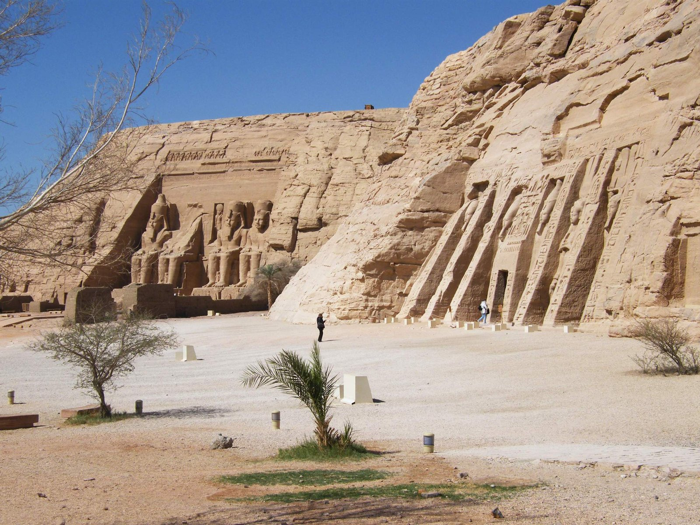
Photo: youssef_alam · Wikimedia Commons, CC BY 3.0 Abu Simbel
Four colossal figures of Ramesses II sit carved into the sandstone cliff above Lake Nasser, watching the water as they have for more than three thousand years. In the 1960s the whole temple was cut into blocks and lifted some sixty metres uphill, clear of the reservoir rising behind the new dam. From here fifteen hundred kilometres of river run north to the sea.
-
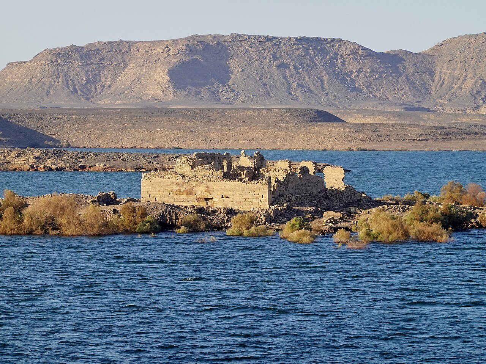
Photo: Olaf Tausch · Wikimedia Commons, CC BY 3.0 Qasr Ibrim
Across the water stands Qasr Ibrim, the only major Nubian site never moved, now an island though it once crowned a high cliff above the valley. As Lake Nasser rose it swallowed everything below, leaving the fortress-temple marooned on a shrinking crag that has been sacred since the New Kingdom. It survives alone above the flooded shoreline.
-
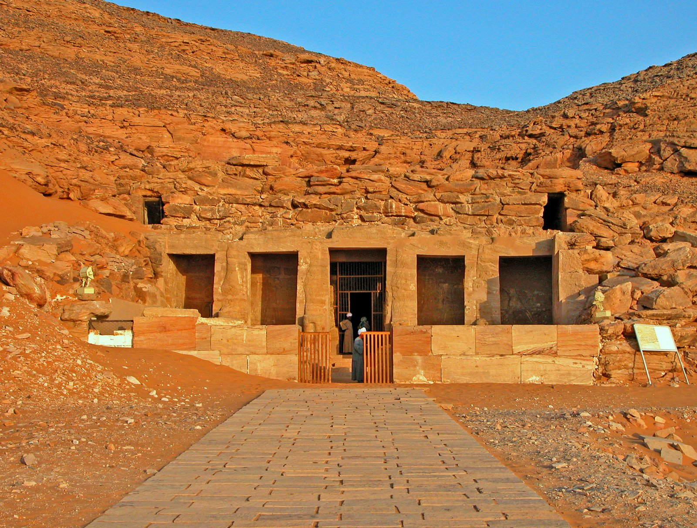
Photo: Dennis G. Jarvis · Wikimedia Commons, CC BY-SA 2.0 Amada and Derr
Two rescued temples sit side by side on the New Amada plateau, high above the reservoir. The little Temple of Amada is one of the oldest standing monuments in Nubia, raised by Thutmose III and his son, its painted reliefs among the best preserved south of Aswan. Beside it the rock-cut Temple of Derr keeps Ramesses II company.
-
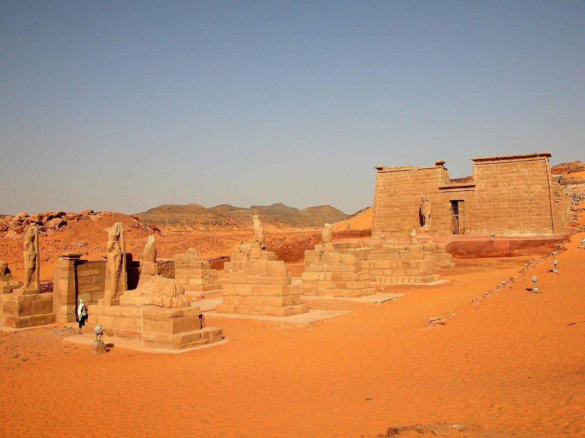
Photo: Dennis G. Jarvis · Wikimedia Commons, CC BY 2.0 Wadi es-Sebua
An avenue of sphinxes gives Wadi es-Sebua its name, the Valley of the Lions, and leads to a temple of Ramesses II dragged four kilometres uphill to escape the flood. Three rescued sanctuaries cluster here now — Sebua, Dakka and Maharraqa — gathered on ground that was once dry desert miles from the river.
-
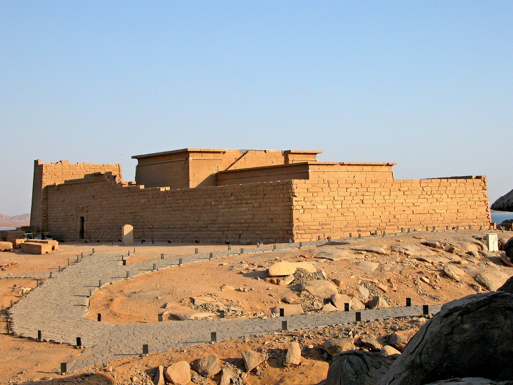
Photo: Dennis G. Jarvis · Wikimedia Commons, CC BY 2.0 Kalabsha Temple
On its rocky island just above the High Dam stands Kalabsha, the largest free-standing temple of Lower Nubia, rebuilt stone by numbered stone after a German team lifted it clear of the rising water. Nearby wait the rescued kiosk of Qertassi and the delicate hall of Beit el-Wali, cut for Ramesses II. The dam wall looms ahead, and beyond it the river finally runs free again.
-
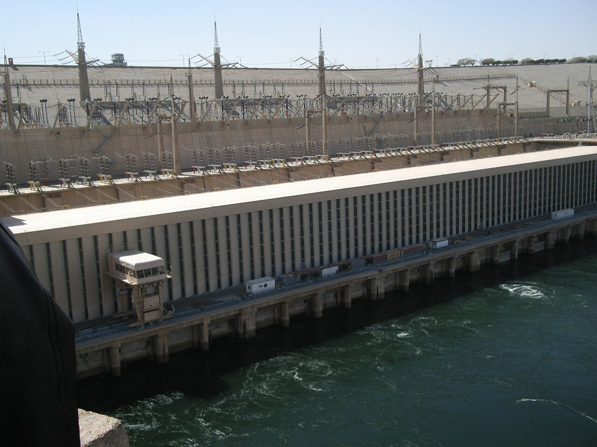
Photo: شرف الدين · Wikimedia Commons, CC BY-SA 3.0 Aswan High Dam
The great rampart of the Aswan High Dam, completed in 1970, tamed the Nile's ancient floods and pooled Lake Nasser behind it. The wall holds back enough water to fill a sea, drowning old Nubia beneath the reservoir. Below it the living, flowing river begins at last, a green ribbon threading north.
-
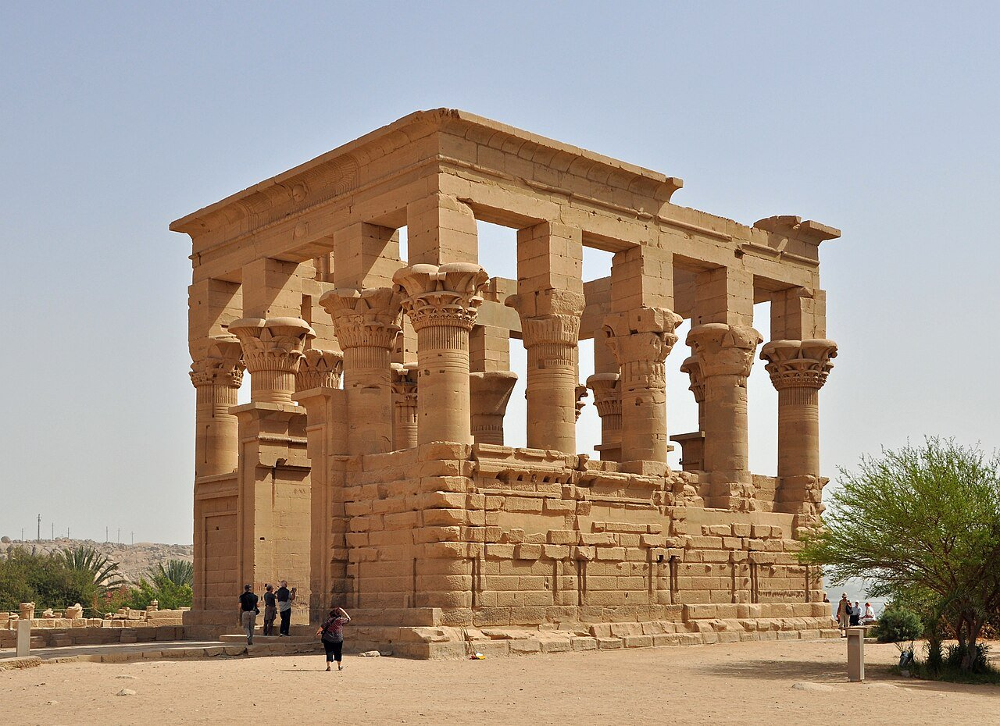
Photo: Marc Ryckaert · Wikimedia Commons, CC BY 3.0 Philae Temple, Aswan
At Aswan, feluccas lean their white sails into the breeze around dark granite islands, and Egypt's deep south softens into a city. Just offshore stands the temple of Isis at Philae, rescued block by block from the floodwaters and rebuilt on higher ground nearby. Date palms shade the granite quays along the water.
-
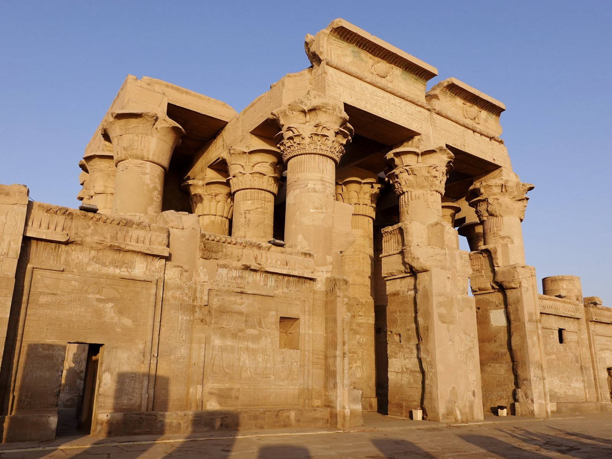
Photo: Olaf Tausch · Wikimedia Commons, CC BY 3.0 Kom Ombo
Kom Ombo stands right on a bend of the Nile, a rare double temple dedicated jointly to the crocodile god Sobek and the falcon god Horus. Mummified crocodiles still lie in its small museum, offerings to the river's most feared inhabitant. The eastern bank carries the route onward.
-
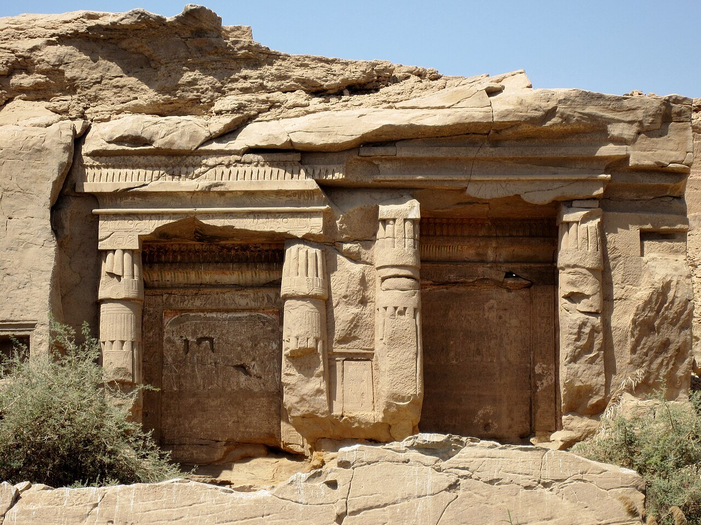
Photo: Olaf Tausch · Wikimedia Commons, CC BY 3.0 Gebel el-Silsila
The river pinches to its narrowest here, sandstone cliffs pressing in from both banks at Gebel el-Silsila, the Mountain of the Chain. For two thousand years pharaohs quarried the stone that built Karnak and Luxor from these very walls, and chisel marks and rock shrines still scar the cliffs. Downstream the channel widens again toward Edfu.
-
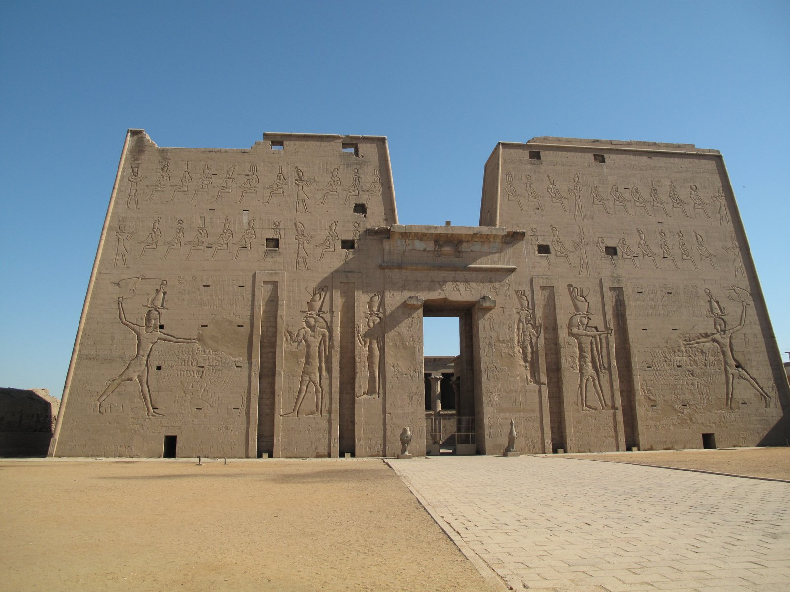
Photo: Patrick.reb · Wikimedia Commons, CC BY-SA 3.0 Edfu
Edfu keeps the most completely preserved temple in all of Egypt, its towering pylon still guarded by a great granite falcon. Dedicated to the god Horus and buried for centuries under sand and silt, it survived almost intact for the modern world to uncover. Beyond it the valley runs on toward Thebes.
-
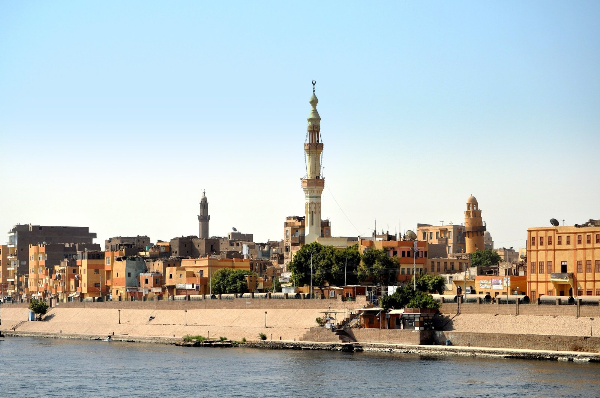
Photo: Badics · Wikimedia Commons, CC BY-SA 3.0 Esna
Nine metres below Esna's modern streets sits the Temple of Khnum, its hypostyle hall lately scrubbed of centuries of soot to reveal blazing painted ceilings of stars and zodiac. The town's old barrage still steps the river here, a reminder that boats once queued to lock through.
-
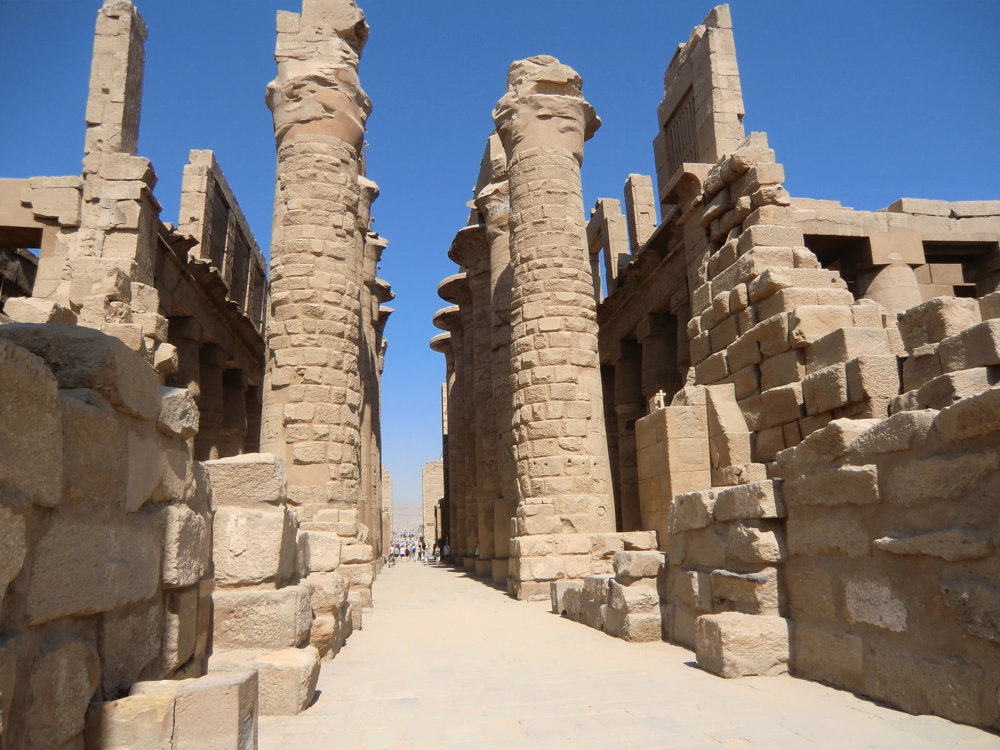
Photo: René Hourdry · Wikimedia Commons, CC BY-SA 4.0 Luxor and Karnak
Luxor is ancient Thebes, often called the world's greatest open-air museum. Across the river lie the Valley of the Kings and Hatshepsut's terraces, while on the east bank the vast forest of stone columns at Karnak fills the largest religious complex of the ancient world. This was the heart of pharaonic Egypt.
-
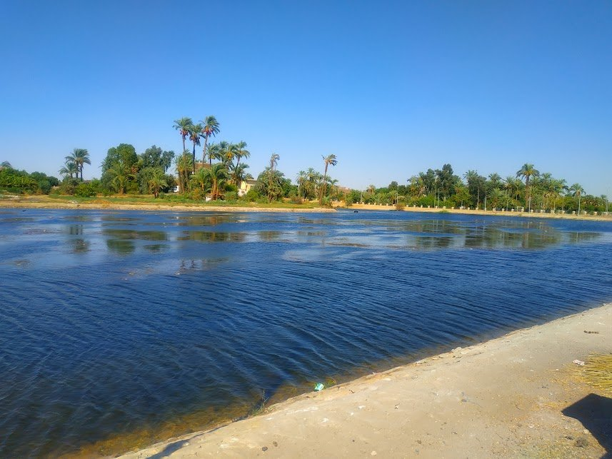
Photo: Amr F.Nagy · Wikimedia Commons, CC0 Qena
Where the Nile swings hard in its great bend, Qena sits at the point where the ancient road to the Red Sea coast strikes off into the eastern desert. It is a busy provincial capital known for its pottery, porous clay jars that keep water cool in the heat. Dendera lies just across the water, and the river bends north toward Abydos.
-
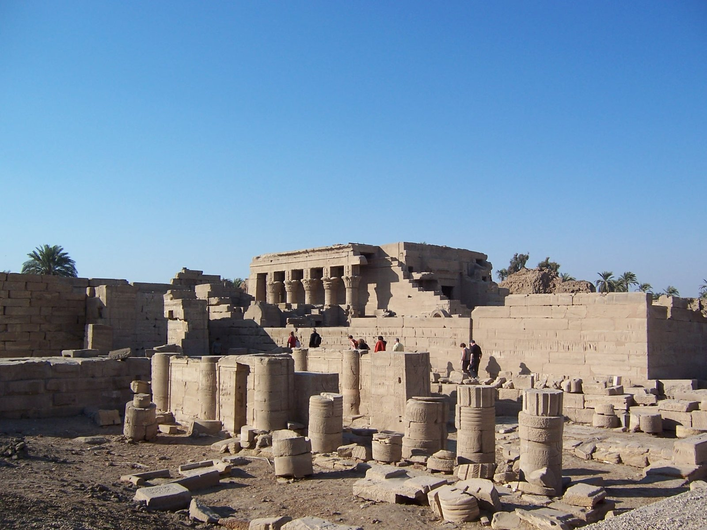
Photo: Csorfoly Daniel · Wikimedia Commons, Public domain Dendera, near Qena
The temple of Hathor at Dendera honours the goddess of love and music, and a famous carved zodiac once spread across its ceiling. The Nile swings sharply east at this great bend before turning north again toward the distant delta. Its columns rise topped with the goddess's serene face.
-
Nag Hammadi
An ordinary sugar-and-aluminium town, Nag Hammadi gave its name to one of the great finds of the century. In 1945 a farmer digging for fertiliser unearthed a sealed jar of leather-bound Coptic gospels here, the Gnostic library that rewrote what we know of early Christianity. A long barrage spans the river beside the town.
-
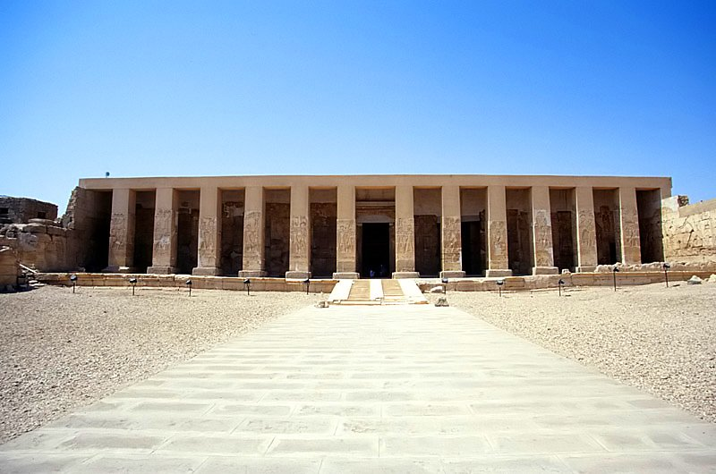
Photo: Roland Unger · Wikimedia Commons, CC BY-SA 3.0 Abydos
Abydos was the holiest of Egyptian cities, where Osiris was believed to lie buried and pilgrims came for three thousand years. The Temple of Seti I shelters reliefs of unmatched delicacy and the famous King List, a carved roll-call of pharaohs reaching back to the dawn of the kingdom. Behind it stands the strange vaulted Osireion.
-
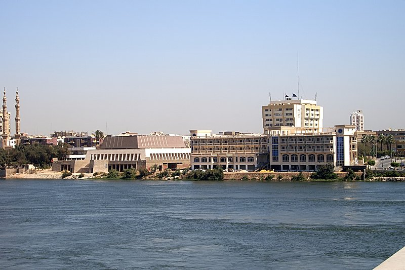
Photo: Roland Unger · Wikimedia Commons, CC BY-SA 3.0 Sohag and Akhmim
Two towns face each other across the water here: Sohag, capital of its province, on this bank, and ancient Akhmim on the east. Akhmim hides a colossal standing statue of Meritamun, daughter of Ramesses II, unearthed under the modern town, and the desert nearby holds the White and Red Monasteries of the early Coptic age.
-
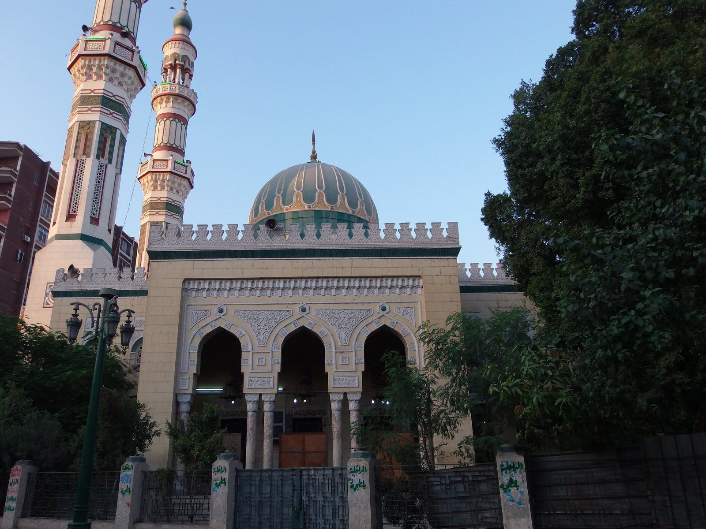
Photo: Hypatia Foundation · Wikimedia Commons, CC BY 3.0 Asyut
Asyut spreads along a broad reach of the Nile, the clamour of Upper Egypt's largest market rising from its lanes. A long barrage steps across the river here, feeding the canals that green the fields of Middle Egypt. North of the city the bank runs on toward Amarna and its painted tombs.
-
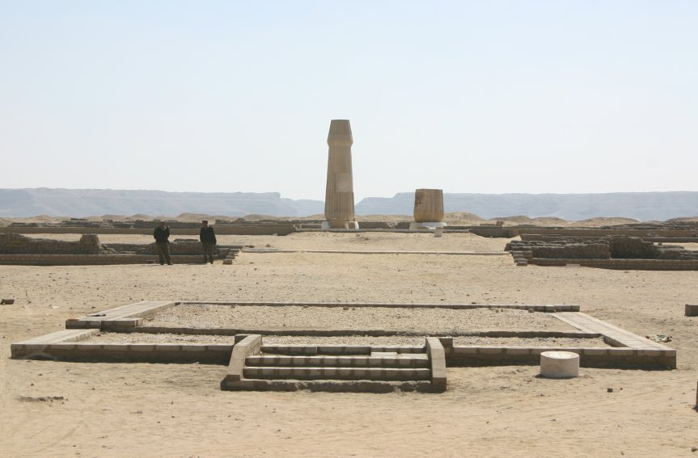
Photo: en:User:Markh · Wikimedia Commons, CC BY-SA 3.0 Tell el-Amarna
Amarna's empty plain once held a whole city, raised by Akhenaten from nothing for his single sun-god and abandoned within a generation. Rock tombs in the eastern cliffs still show the royal family bathed in the rays of the Aten, and boundary stelae mark the limits the pharaoh swore never to cross. Few places feel so haunted by a vanished idea.
-
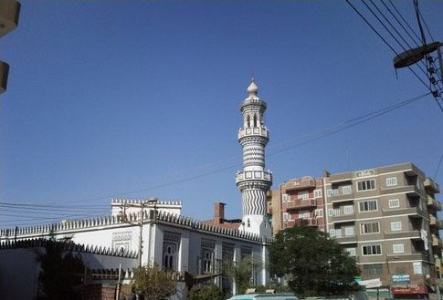
Photo: Ahmadpontymageed (talk) 04:58, 2 July 2011 (UTC) · Wikimedia Commons, CC BY-SA 3.0 Mallawi
The road into Middle Egypt's wonders runs through Mallawi, an unassuming market town. Its small museum, looted and burned in 2013 and since rebuilt and restocked, guards finds from the sacred animal catacombs of Tuna el-Gebel just to the west, where mummified ibises and baboons were buried by the thousand for the god Thoth.
-
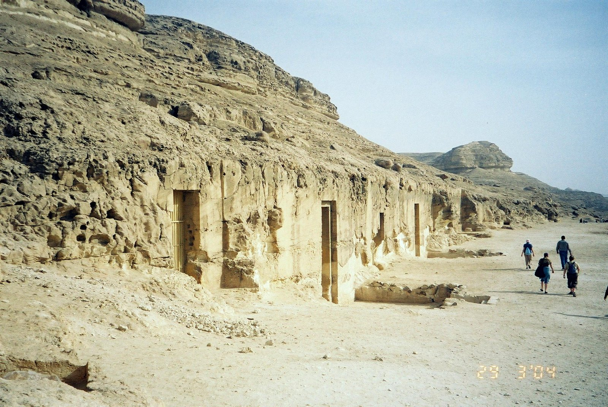
Photo: Markh at English Wikipedia · Wikimedia Commons, Public domain Beni Hasan
Cut into the eastern cliff for the provincial governors of the Middle Kingdom, the rock tombs of Beni Hasan hold some of Egypt's liveliest paintings: wrestlers caught in dozens of poses, hunts and harvests, and a caravan of bearded foreigners arriving with their wares. From the terrace the whole green valley unrolls below toward Minya.
-
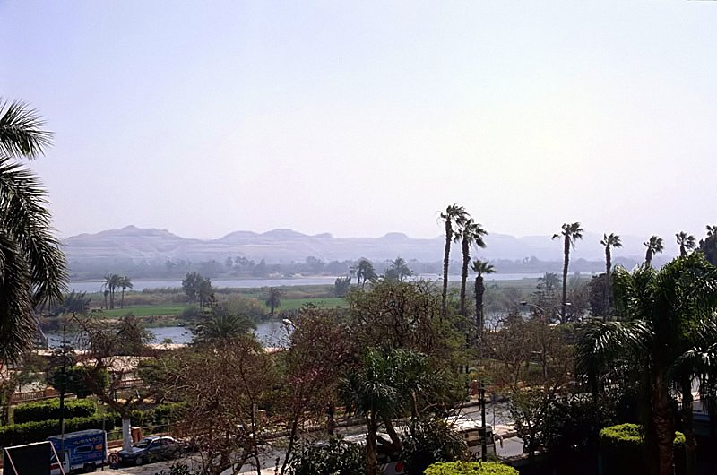
Photo: Roland Unger · Wikimedia Commons, CC BY-SA 3.0 Minya
They call Minya the Bride of Upper Egypt, its corniche lined with faded mansions from the cotton-boom years. University students fill the riverside gardens at dusk, and the Nile runs broad and easy between palm-lined banks. North of the city lies the buried papyrus town of Oxyrhynchus.
-
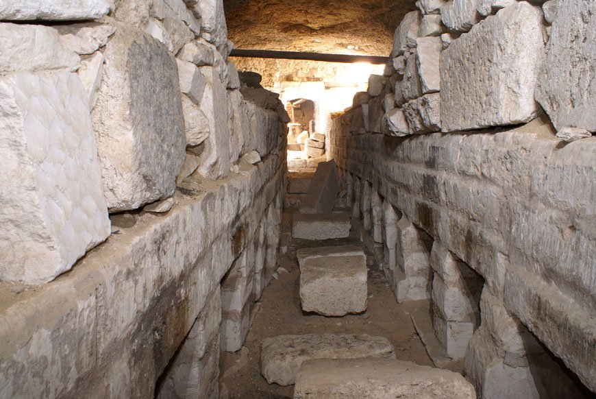
Photo: Bombaladan · Wikimedia Commons, CC BY-SA 3.0 Bahnasa (Oxyrhynchus)
Dusty Bahnasa was ancient Oxyrhynchus, a town made world-famous by its rubbish heaps. Buried in the dry sand lay hundreds of thousands of papyrus scraps — lost plays, gospels and shopping lists — the largest cache of ancient writing ever found and still being read a century on. Little now stands above ground.
-
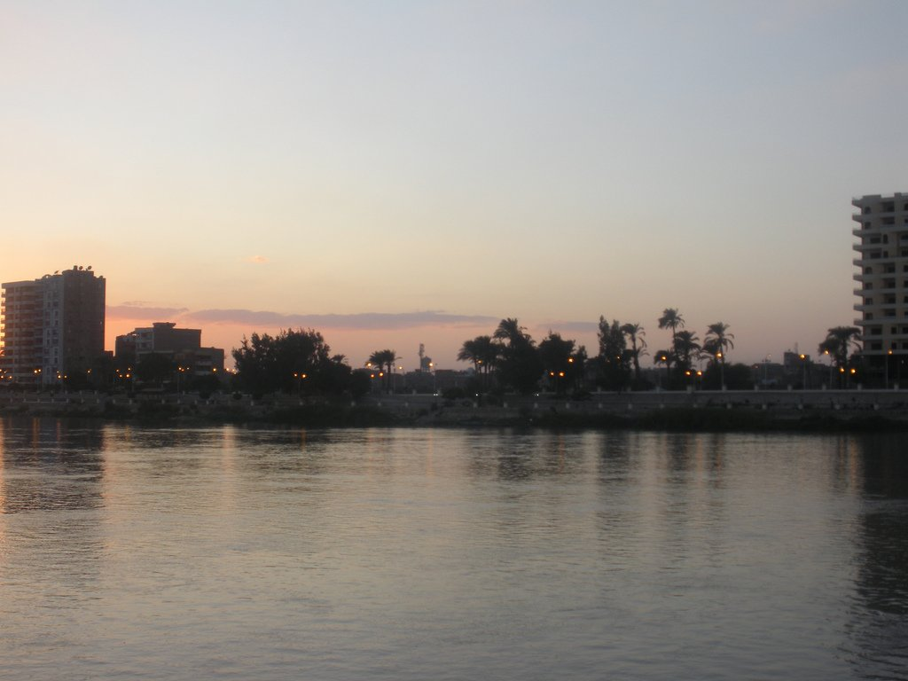
Photo: shaimaa ahmed saleh from egypt · Wikimedia Commons, CC BY-SA 2.0 Beni Suef
The valley begins to widen at Beni Suef, cotton and sugarcane stretching flat to a hazed horizon on either bank. It is a working river town, humming with trucks and the smell of cut cane. Downstream the gaunt stepped tower of the Meidum pyramid soon breaks the skyline.
-
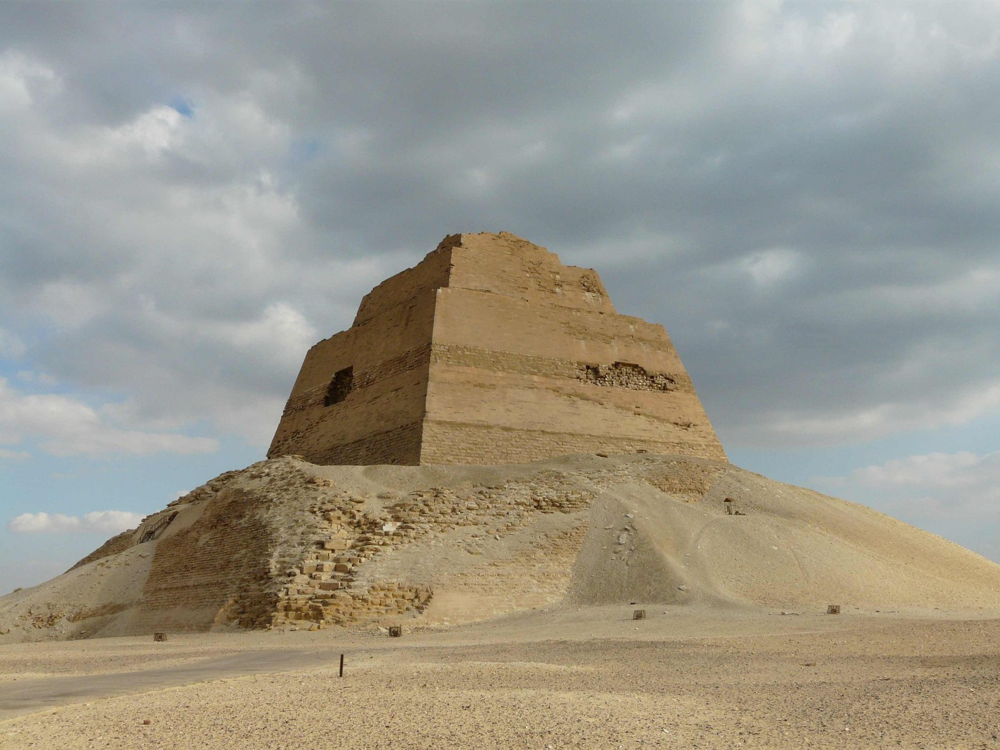
Photo: Kurohito · Wikimedia Commons, CC BY-SA 3.0 Meidum Pyramid
The strange three-stepped tower of Meidum shows on the skyline from far off, rising from a skirt of its own rubble. This was an early attempt by Sneferu at a true smooth-sided pyramid; its outer casing slid away in antiquity, leaving the gaunt core that stands today. The lesson learned here shaped the pyramids that followed, downstream at Dahshur.
-
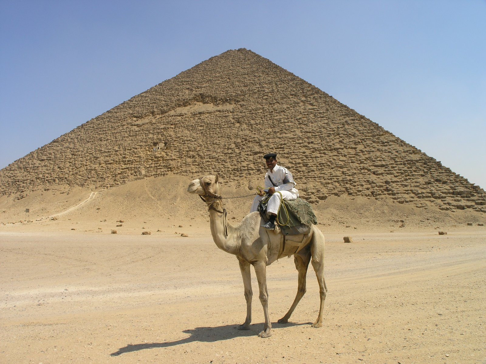
Photo: Daniel Mayer · Wikimedia Commons, CC BY-SA 4.0 Dahshur
At Dahshur, Sneferu finally solved the riddle of building tall. The Bent Pyramid changes its angle halfway up, frozen mid-correction, while beside it the Red Pyramid is the first successful true pyramid in history. They are gloriously uncrowded out here on the desert edge; Giza and Saqqara wait just to the north.
-
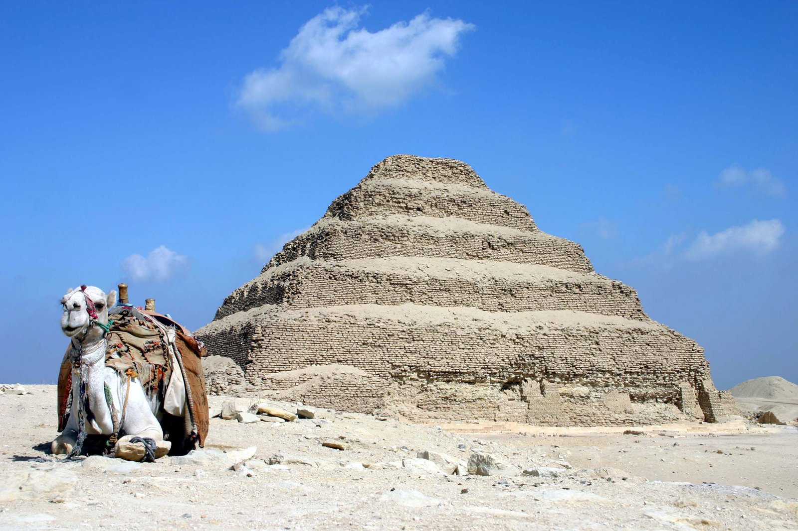
Photo: Charles J. Sharp · Wikimedia Commons, CC BY-SA 3.0 Saqqara and Memphis
The Step Pyramid of Djoser crowns Saqqara, the oldest great stone building on Earth and the ancestor of every pyramid that followed. Below in the palm groves lie the ruins of Memphis, capital of a united Egypt, where a fallen colossus of Ramesses II rests on its back in a shed. The necropolis runs for miles toward Giza.
-
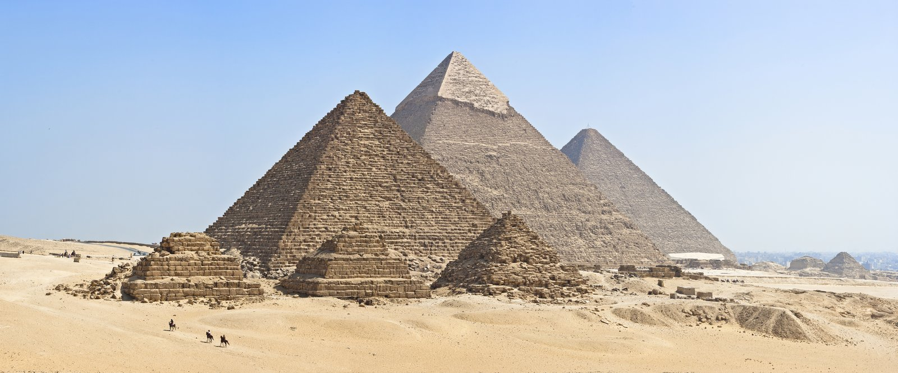
Photo: KennyOMG · Wikimedia Commons, CC BY-SA 4.0 Giza Pyramids
On the edge of the desert plateau at Giza, the Great Pyramid of Khufu and the Sphinx have kept watch over the valley for four and a half thousand years. The last of the Seven Wonders of the Ancient World still standing, the Great Pyramid rises above the sprawl of the modern city. The river runs on into Cairo.
-
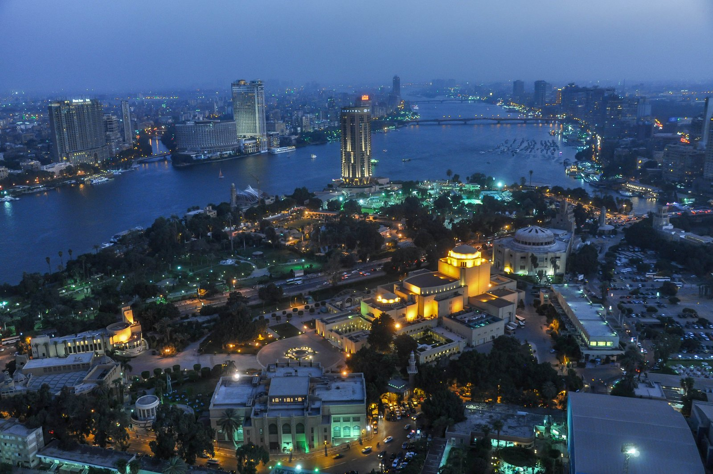
Photo: Jorge Láscar from Melbourne, Australia · Wikimedia Commons, CC BY 2.0 Cairo
Cairo is the largest city in the Arab world, and the Nile cuts straight through the middle of it, feluccas drifting past ranks of high-rise towers. Just to the north the river divides into the Rosetta and Damietta branches, fanning out to form the great green delta. The western, Rosetta branch leads toward the sea.
-
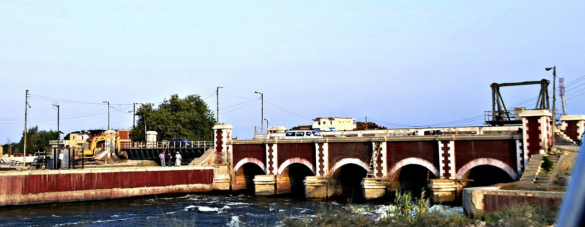
Photo: Faris knight · Wikimedia Commons, CC BY-SA 4.0 Qanater Barrages
The Delta's apex is marked by the Qanater el-Khairiya, the Delta Barrages, where the Nile splits into its two great arms and gardens spread across the divide. Begun in the 1830s, these were the first modern works to tame the river's flow and water the cotton fields, and a leafy public park now drapes the old waterworks. The western Rosetta branch runs on from here.
-
Banha, Nile Delta
Near Banha the single river has dissolved into a web of channels threading between endless fields, the lush heart of the Nile Delta. This triangle of silt-rich land has fed Egypt since the first farmers settled it some seven thousand years ago. Northwest across the canal-laced fields lie Shibin el-Kom and the Rosetta branch beyond.
-
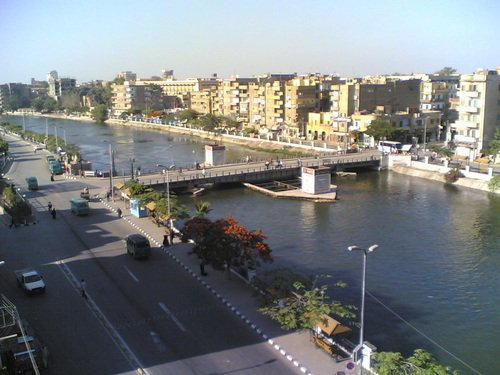
Photo: himoz: https://www.panoramio.com/user/1547621?with_photo_id=8875725 · Wikimedia Commons, FAL Shibin el-Kom
The capital of fertile Menoufia province, Shibin el-Kom sits deep in the Delta cropland. This is rich black-soil country, dense with canals and villages, and the surrounding province has given Egypt more than one of its presidents. The flat green horizon stretches in every direction toward Tanta.
-
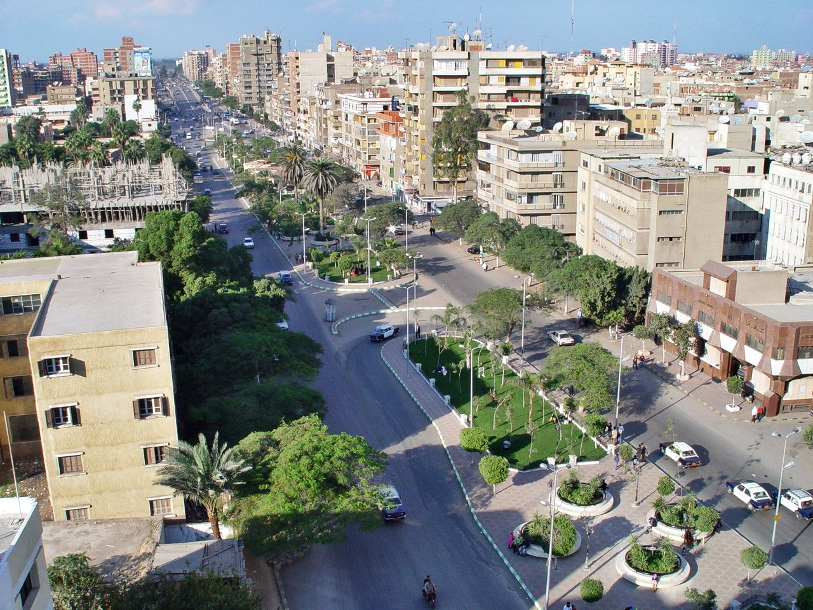
Photo: Faris knight · Wikimedia Commons, CC BY-SA 4.0 Tanta
Largest of the Delta's inland cities, Tanta grew up around the shrine of the Sufi saint Ahmad al-Badawi. Each autumn after the harvest its mulid festival draws hundreds of thousands of pilgrims, one of the biggest religious gatherings in Egypt. The town hums with trains and markets; from here the route bends northwest toward Disuq.
-
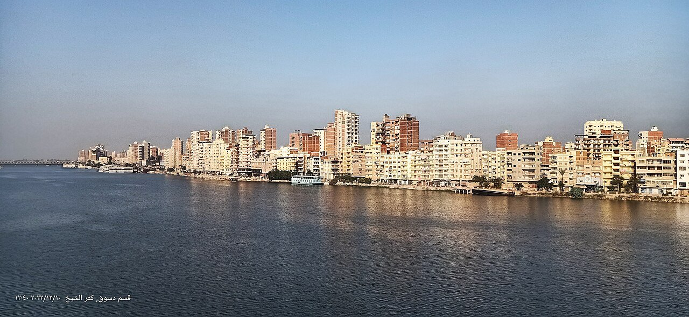
Photo: Faris El-Gwely · Wikimedia Commons, CC BY-SA 4.0 Disuq
The great mosque of Ibrahim al-Desouqi rises beside the Rosetta branch at Disuq, where the river runs broad and slow. Another revered Sufi saint rests here, and his mulid fills the riverside streets with light and crowds. The water is nearly at the coast now, the sea-air close on the final stretch.
-
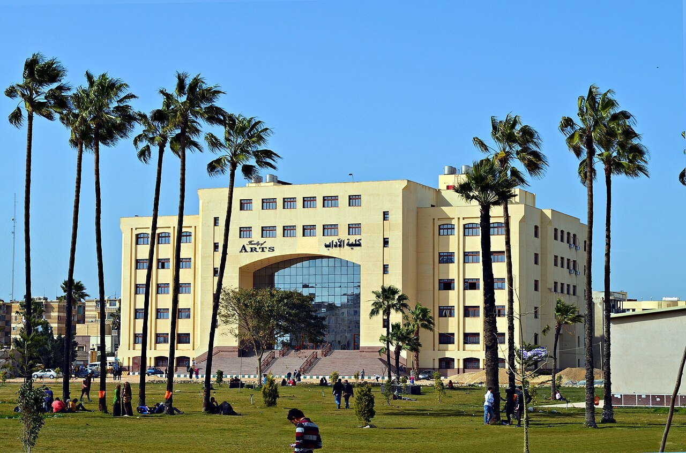
Photo: Faris El-Gwely · Wikimedia Commons, CC BY-SA 3.0 Kafr el-Sheikh
Rice paddies shimmer across the wide farmland of Kafr el-Sheikh, deep in the delta, and the air begins to carry the first salt tang of the coast. The Mediterranean is close now, the Rosetta branch broadening as it nears its mouth. Only the last stretch to the sea remains.
-
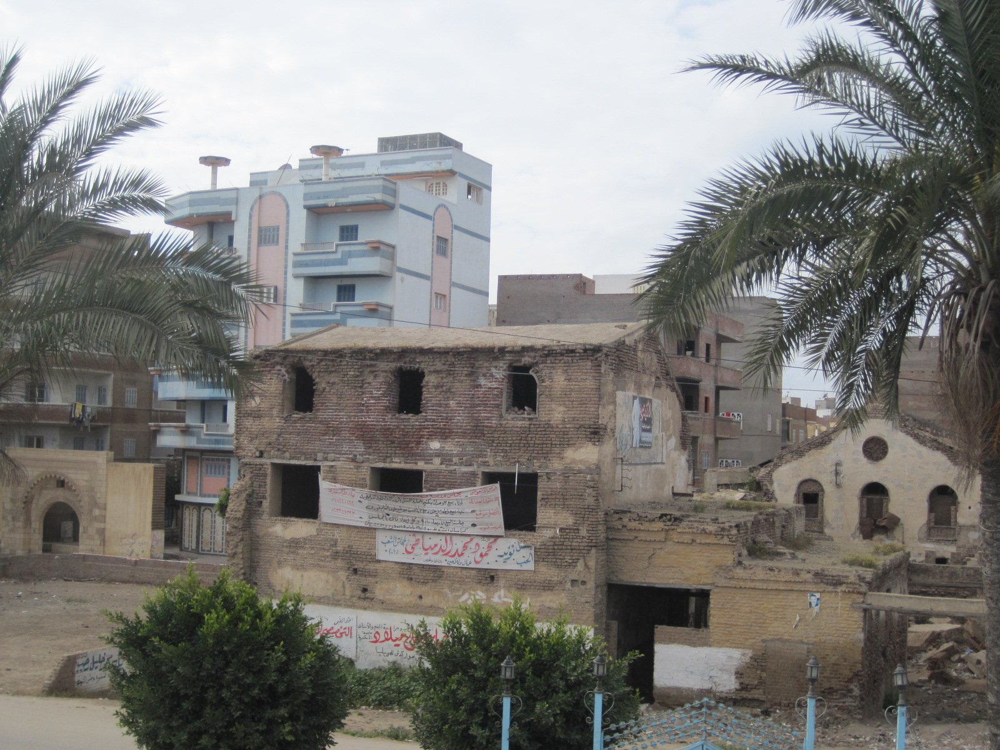
Photo: Ayman salahe · Wikimedia Commons, CC BY-SA 4.0 Fuwwah
Fuwwah was once a thriving Ottoman port, and its old riverfront is still studded with crumbling mosques and the workshops of its famous handwoven kilim rugs. Before Alexandria's canal stole its trade, this was a key harbour where Mediterranean goods met the Nile. The Rosetta branch runs wide and final here; the river-mouth and the sea are almost in sight.
-
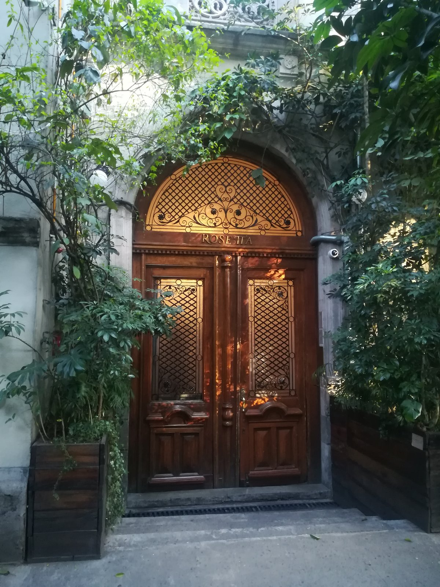
Photo: Tbhotch · Wikimedia Commons, CC BY-SA 4.0 Rosetta on the Mediterranean
At Rosetta the western branch of the Nile pours out at last into the Mediterranean, fifteen hundred kilometres from the colossi of Abu Simbel. Here in 1799 Napoleon's soldiers unearthed the Rosetta Stone, the trilingual slab whose Greek and hieroglyphic text finally unlocked the language of the pharaohs. From desert temple to delta shore, the whole length of the river runs behind.
Walking Walk the Nile
Your watch is already counting these steps. Watch Walks spends them on Walk the Nile, all 1,500 km of it, and hands you each landmark as you reach it. There's no route recording, no account and no ads. The Inca Trail is free; this one is a one-time purchase with no subscription.
Other trails in Africa
- High Atlas Traverse 303 km · Morocco
- Kilimanjaro (Machame Route) 45 km · Tanzania
- Mount Kenya (Chogoria Route) 39 km · Kenya
- Otter Trail 37 km · South Africa
- Kilimanjaro (Lemosho Route) 70 km · Tanzania
- GR R2 (Réunion) 144 km · Réunion